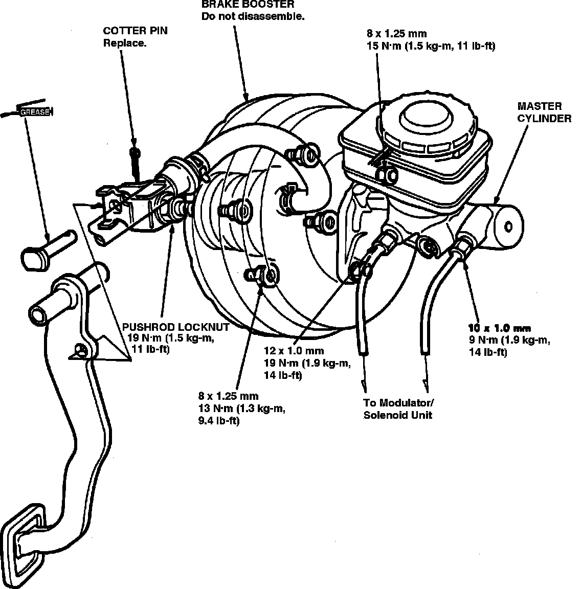

Operation CHARM
: Car repair manuals for everyone.
Home
>>
Acura
>>
1994
>>
Legend Sedan V6-3206cc 3.2L SOHC FI
>>
Repair and Diagnosis
>>
Brakes and Traction Control
>>
Power Brake Assist
>>
Vacuum Brake Booster
>>
Service and Repair
>>
Removal and Installation
Removal and Installation
Fig. 4 Brake Booster Replacement:

Refer to
Fig. 4
for booster replacement.